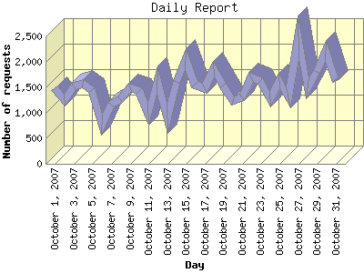

Report generated by Analog 6.0 and Report Magic 2.21
|
Web Server Statistics for "Harish Narayanan (hnarayan) - October 2007" Report generated by Analog 6.0 and Report Magic 2.21 |
The Daily Report identifies the activity for each day within the reporting period. Remember that one page hit can result in several server requests as the images for each page are loaded.

| Day | Number of requests | Number of bytes transferred | Percentage of the bytes | Percentage of the requests | |
|---|---|---|---|---|---|
| 1. | October 1, 2007 | 1,478 | 52.074 MB | 3.57% | 3.17% |
| 2. | October 2, 2007 | 1,244 | 26.879 MB | 1.84% | 2.67% |
| 3. | October 3, 2007 | 1,523 | 26.042 MB | 1.78% | 3.26% |
| 4. | October 4, 2007 | 1,566 | 40.574 MB | 2.78% | 3.36% |
| 5. | October 5, 2007 | 1,438 | 32.846 MB | 2.25% | 3.08% |
| 6. | October 6, 2007 | 770 | 28.812 MB | 1.97% | 1.65% |
| 7. | October 7, 2007 | 1,152 | 86.473 MB | 5.92% | 2.47% |
| 8. | October 8, 2007 | 1,272 | 37.759 MB | 2.59% | 2.73% |
| 9. | October 9, 2007 | 1,492 | 53.038 MB | 3.63% | 3.20% |
| 10. | October 10, 2007 | 1,423 | 57.497 MB | 3.94% | 3.05% |
| 11. | October 11, 2007 | 984 | 21.010 MB | 1.44% | 2.11% |
| 12. | October 12, 2007 | 1,646 | 55.428 MB | 3.80% | 3.53% |
| 13. | October 13, 2007 | 897 | 21.858 MB | 1.50% | 1.92% |
| 14. | October 14, 2007 | 1,606 | 27.424 MB | 1.88% | 3.44% |
| 15. | October 15, 2007 | 2,061 | 28.852 MB | 1.98% | 4.42% |
| 16. | October 16, 2007 | 1,556 | 24.135 MB | 1.65% | 3.33% |
| 17. | October 17, 2007 | 1,474 | 60.755 MB | 4.16% | 3.16% |
| 18. | October 18, 2007 | 1,865 | 110.789 MB | 7.59% | 4.00% |
| 19. | October 19, 2007 | 1,540 | 51.331 MB | 3.52% | 3.30% |
| 20. | October 20, 2007 | 1,231 | 17.817 MB | 1.22% | 2.64% |
| 21. | October 21, 2007 | 1,299 | 28.348 MB | 1.94% | 2.78% |
| 22. | October 22, 2007 | 1,702 | 38.885 MB | 2.67% | 3.65% |
| 23. | October 23, 2007 | 1,629 | 38.371 MB | 2.63% | 3.49% |
| 24. | October 24, 2007 | 1,267 | 40.997 MB | 2.81% | 2.71% |
| 25. | October 25, 2007 | 1,623 | 85.328 MB | 5.85% | 3.48% |
| 26. | October 26, 2007 | 1,311 | 63.478 MB | 4.35% | 2.81% |
| 27. | October 27, 2007 | 2,488 | 78.529 MB | 5.38% | 5.33% |
| 28. | October 28, 2007 | 1,482 | 36.629 MB | 2.51% | 3.18% |
| 29. | October 29, 2007 | 1,799 | 81.536 MB | 5.59% | 3.86% |
| 30. | October 30, 2007 | 2,220 | 31.447 MB | 2.15% | 4.76% |
| 31. | October 31, 2007 | 1,621 | 74.410 MB | 5.10% | 3.47% |
Most active day October 22, 2007 : 290 pages sent. 2,488 requests handled. 82,344,020.00 served.
Daily average: 1,505 requests handled. 47.076 MB served.
This report was generated on November 13, 2007 19:06.
Report time frame October 1, 2007 00:03 to October 31, 2007 23:59.
| Web statistics report produced by: | |
 Analog 6.0 Analog 6.0 |  Report Magic 2.21 Report Magic 2.21 |